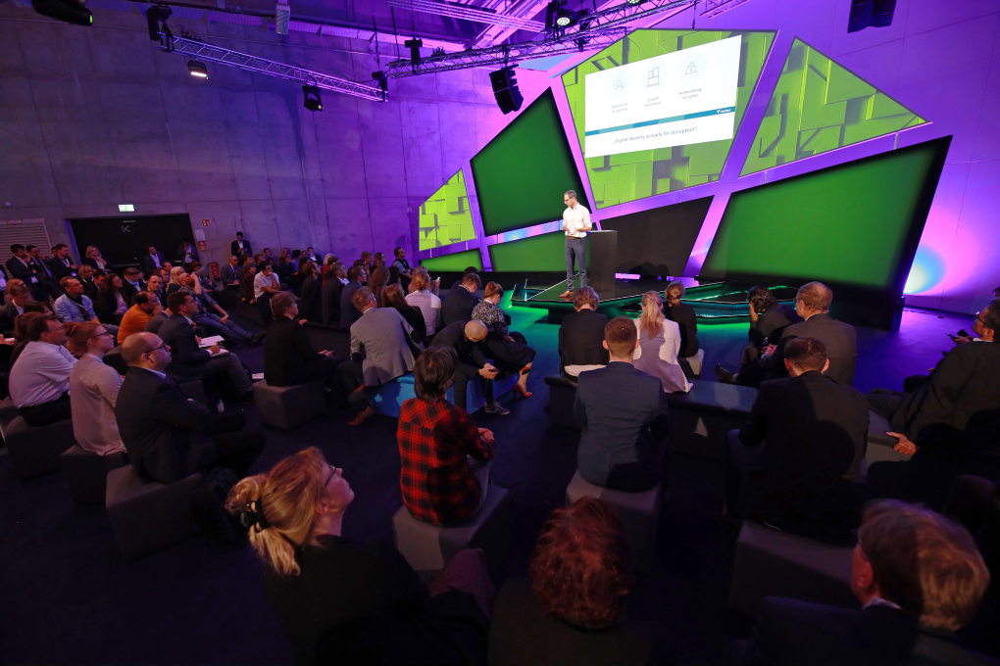

by law 575 services digitalised until 2022
by law usercentered services
In the year 2017 the german government passed the law called “Onlinezugangsgesetz” (OZG). It garanties the accessibility of govermentalservices in the internet. It also defines a usercentered expierence for german citizens to make them actually usable. By the year 2022 all 575 govermantal services should be digitalised.
This law was my motiviation to take a deeper look into govermental services from a designperpective, because the complexity and constrains make it very interesting how it could come together.
The eGovernement Monitor from 2019 listed the most used online services provided by the minsteries. Most citizens only use online services to make appointments in the town hall or citizen service centers.
The german ID card is equiped with a NFC chip. A NFC reader or smartphone with the “AusweisApp2” can read the information on the chip to make online identification possible. This application can not only be used by the goverment, it is also available for third parties. But at the moment there are only a few services availble to use this feature and also a lot of germans disabled this function on ther ID card.
Every service from the ministeries gets standardized with the FIM principle. It translates the service into the right datatypes and fields to make it usable across all govermental plattforms. This services get then programmed and published by the ministery and can be used by all german federal states.
The Smart Country Convention gethers politicians and companies which work on the digitalization of govermantal infrasturctures. To get more insights on the current state and to understand the workflow of this industie, I visited the convention for three days.

Companies presented hard- and softwaresolutions. Politicians and minestrystaff presented the prograss they made on translating services and how they are making them userfriendly. As they said in interviews developing usercentered services is quiet a new thing for them. But the opinions in the talks split in two directions. On side wants to create transparency and self-government, on the other side data security is an important factor.
self-government
vs
data security
After the three days in Berlin I had three main questions for my project: What makes me a citzen? How much responsibility would I take ? Where are the points of contact with the state ?
After the research I defined four main keypoints on which I want to focus in the concept. These reflect on the current challengas and on the current demands of society.